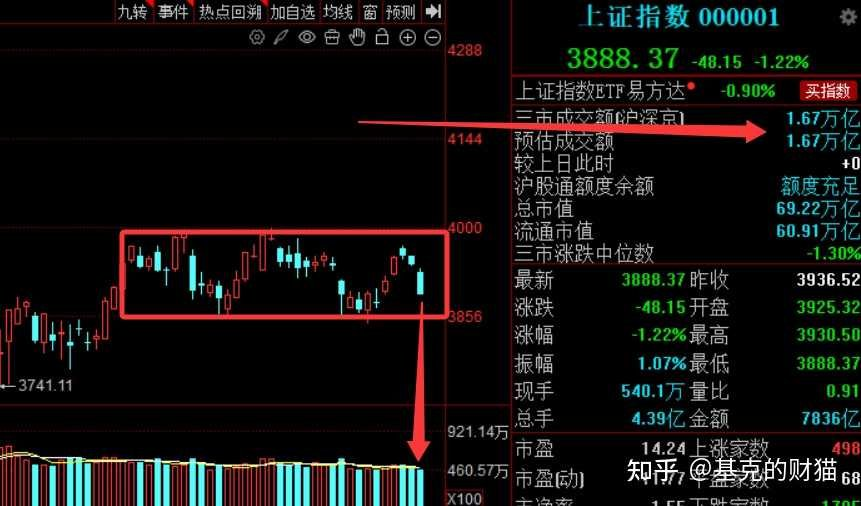
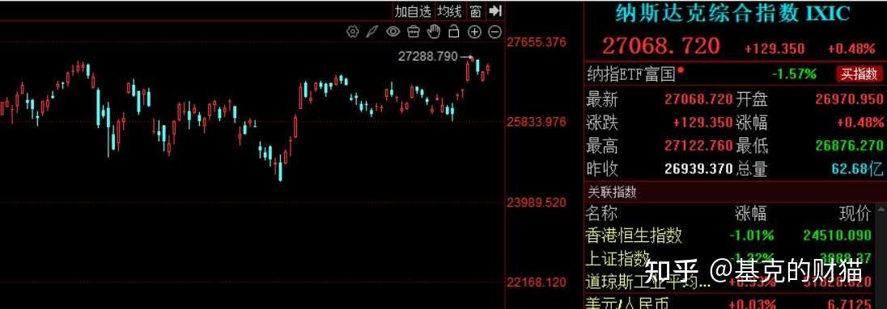
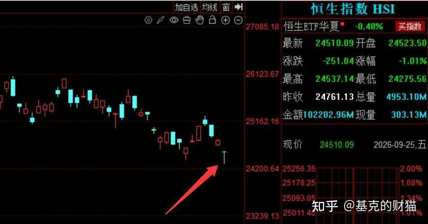
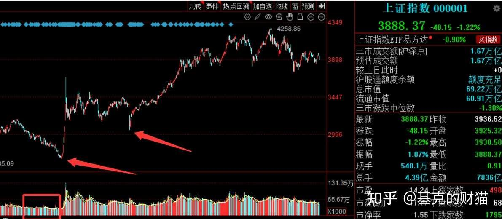
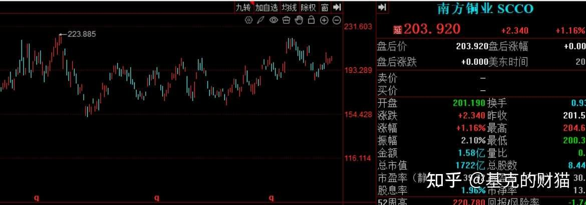
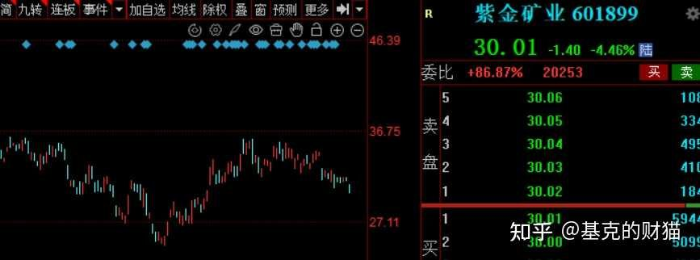
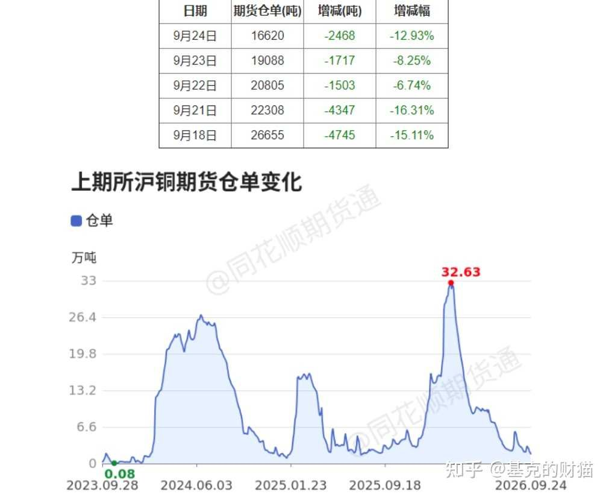

AI 文章核心概述（精简版）
本文核心逻辑在于通过‘政策预期博弈’来对抗‘宏观利空压制’。作者认为当前A股处于成交量极度萎缩的‘底部磨底期’，市场在等待‘妈妈队’（国家队）在外部贸易压力与经济数据承压的背景下出台托底政策。其因果链条为：外部利空（贸易摩擦、加息预期）导致机构避险抛售->市场流动性枯竭->散户恐慌离场->政策博弈窗口打开->具备稀缺性与业绩支撑的金属板块成为资金防御与进攻的唯一锚点。
假期消息梳理：利空扎堆、成交量地量注【本质逻辑】成交量是市场的‘氧气’。地量意味着多空双方分歧极小，卖盘枯竭，买盘观望，通常是变盘的前兆。【新手提示】地量不代表立刻反转，但它是‘磨底’的必要条件，此时盲目割肉极易卖在最低点。，节前最后三个交易日，A股到底怎么走？空仓还是坚守？今年能守的方向，就只剩金属了
兄弟们，明天就要开盘了，三天之后又要过国庆了。上周五A股回调了1.22%，成交量极小。而周五晚上美股是涨的。按照A股的老传统，要么不跟，要么冲高回落。那明天到底会走哪一种？还是说，市场给我们一个出乎意料的来根阳线？我认为在节前三天这个位置，市场很有可能是走震荡的，原因是没有成交量。而且现在离箱体下沿也比较近了。那是打到下沿再反弹，还是杀所有人一个预料不及，提前反弹？这个明天基本就能看出来。

图表视觉解读
图中显示成交量已缩至极低水平，红色方框内的震荡区间显示多空力量在箱体下沿反复拉锯，反映出市场在等待明确的政策信号，心理博弈处于‘极度压抑’阶段。
我知道现在很多人连文章都不想看了。市场走得太烂，怨气太重。但我想说，越是这种时候，越要保持冷静。明天的市场，以及接下来这三天，非常关键。因为这是节前最后三个交易日了。有没有一种可能性，就是中秋爆出来的利空，就是国庆要去解决、要去处理好的？
这个逻辑很重要。中秋的一些消息，很有可能就是国庆的引子。国庆去等的消息，很有可能其实就是中秋期间这些往后推的消息。所以接下来的三个交易日，有几个非常非常重要的信号，我们一定要引起重视。市场到底是想节后再起，还是节前有所准备先行启动？这两种方式走哪一个，明天基本就能看出来。
那么到底是明天上来给大家一个下马威，还是让大家喘口气、安安心心度过这三个交易日然后过个国庆？我知道现在大家心里都悬着一块石头，生怕周末又有新的利空，生怕明天一开盘又被摁在地上摩擦。今天我把我的思路给大家交个底。
一、假期消息面：利空偏多，但别那么悲观
先说说周末的消息，整体来看，假期的利空多一点。剩下的很多利好，有点刺激不起来这个市场。具体来说，有几个消息需要引起重视：
第一个消息，我们跟丑国双方碰头了。 这个话题比较敏感，我不说那么细。用两个字概括结果：中性。没有超预期的好消息，也没有特别坏的消息。说白了，双方的会晤就这么简单，整体偏中性。
第二个消息，原油的利空消息：丑国直接拒绝了小朗子的协议请求。周五原油回调了2.59%，但拒绝之后，我估计明天原油大概率要上涨，幅度可能在3%左右。这对市场来说，是一个利空。
第三个消息，也是最重要的一个。欧洲对我们有威胁，可能在贸易上不合作了。这个消息影响会很大，会影响我们很多行业。而且10月份欧洲那边放了狠话，要求我们在贸易上做出让步，不然就彻底关闭和我们的贸易往来。
这个消息机构绝对提前知道。周四晚上我还跟大家说了，为什么机构要提前去砸宁王、美的、砸三一重工。前段时间新能源车、家电、工程机械等等这一波机构标的注【本质逻辑】指机构重仓持有的行业龙头。机构砸盘往往是为了在利空落地前调仓换股或降低仓位。【新手提示】当看到机构重仓股无缘无故大跌，往往预示着有未公开的宏观利空正在发酵。回落，不就正好验证了这则消息吗？
那我们想想，妈妈队注【本质逻辑】指国家队资金，通过汇金、证金等渠道入场，其核心职能是维护市场稳定，而非单纯追求短期收益。当市场出现流动性危机时，其入场往往是政策底的信号。【新手提示】不要试图精准捕捉国家队入场点，应关注成交量是否在极度萎缩后出现异常放量，那是资金博弈转向的标志。还能有什么招？如果我们真让步了，就是任人拿捏。所以我觉得这个概率很低；那么如我们不让步，对方真一硬，我们就必然会出政策了。但凡我们不让对方真的把贸易关了，我们绝对会有政策的，因为妈妈队不出手都不行。
二、面对这么多利空，我们该怎么办？
那么现在面对这样的利空，面对现在市场的弱，我们的选择就两种：第一种，空仓；第二种，熬着。
1、那现在空仓对还是熬着对？
我不敢说特别确定，因为都有概率。看大家个人了。有些人可能觉得空仓之后，一个星期之后再买入，有了更低点，空仓就是对的，这种概率会有。但是我觉得，大家要去想一想，面对这样的利空，外围市场也好，我们的港股也好，为什么机构敢去做抄底的动作？
我们先看外围的反馈。很多人担心加息，10月份加息概率55%，又要加完这一次再加。但是去看美股，纳斯达克的强势

就算不说美股，免得你们说我们不跟美股，那么看港股。周五港股走了一个非常强的探底回升。这个探底回升肯定是机构做的，总不能是散户做的吧？所以，这说明资金是不怕的。

图表视觉解读
港股的探底回升动作被作者解读为‘机构先手’，暗示外部资金对中国资产的定价权博弈，对比A股的弱势，说明A股当前主要受制于流动性而非基本面。
所以说，既然机构都敢去做抄底，我们经常说要去跟机构，那机构现在做的办法就是逢低去吸。我们虽然没有那么多钱，那我们现在是空着合适还是熬着合适？说白了，我们的指数每一次都是一样的。想一想历史规律，924行情爆发之前，成交量是不是都已经缩到了极致了？9月24的前夕，沪指都是2200亿，2198亿，成交量都已经缩到极致了，然后来了一波政策的预期。
包括去年的4月7号也是一样，一波大杀出来之后，政策直接给你出来了。也是一个低点，丑国全面的毛衣压制，在大家最恐慌的时候，在大家最不想看盘的时候，觉得市场一定完蛋了的时候，妈妈队站出来，然后开启一波行情。不都是一样吗？
我们A股的问题，至始至终就一个：没流动性。我们的机构比较鸡贼，在这个位置，就是要等妈妈队的政策落地。所以为什么我说在这个位置，不要轻易去看空，或者说不要轻易割肉。有可能还会继续回调，有这种概率，但是不要轻易割。你选择要挨打，就把它挨透。尤其是在A股市场，主力多坏啊，港股没事，美股没事，欧洲也没事，就我们A股有事？你们不觉得很奇怪吗？
那么有没有一种可能性，就是主力在这个位置，就是要把你逼出来。散户拿不住了，这时候市场指数位置也低了，机构主力再往上去做。这种概率是有的。所以要挨打就挨透，要不然你就别挨，直接空仓。
2、那么现在最关键的问题就是，妈妈队会不会出手？
我们想一想，妈妈队出手的条件是什么？第一个，市场没人玩了，成交量特别烂。现在成交量7000多，周五这么大一根阴线，沪指成交额才7800。但凡周五这根阴险小一点，可能更低。那么再慢慢破个7000，妈妈队绝对要出来。第二个，经济数据差，现在的数据比924之前还差。第三个，有外围对我们的压制，欧洲的威胁。
那么现在坏消息都加到一块儿了，市场没人玩了，经济又差，外围因素又有，妈妈队能不出手吗？要知道，往往坏消息越多的时候，妈妈队出手的概率越高。而且，虽然现在是美联储的加息预期，但妈妈队难道就没有政策去做应对吗？我觉得未必。
三、外围市场在交易的一个重要逻辑：美联储从鹰转鸽注【本质逻辑】指美联储货币政策从加息（鹰派）转向降息（鸽派）。降息意味着全球流动性释放，对A股这类风险资产是重大利好。【新手提示】关注美联储点阵图与非农数据，这是判断全球资金流向的核心风向标。
有人可能会说，我们这就是在赌消息吗？肯定是不明智的。但其实我们也不是在赌消息，我们一直在赌一个逻辑，也不能说在赌，因为这个逻辑很确定，就是美联储从鹰转鸽。而且资金的预期慢慢地已经不再去交易美联储鹰派了，慢慢去交易美联储鸽派。这就是我们一直做的逻辑。
924也好，去年的4月7号也好，当时的美联储是降息的周期，市场在走降息周期。现在美联储在走加息周期。降息周期，我们妈妈队容易出政策，容易出消息，因为我们可以去放水。那现在加息周期，你们觉得妈妈队还能出政策吗？
这个问题是一个非常关键的问题。我虽然也觉得很难，但现在必须要出来。
因为现在连欧洲那边都放了狠话，10月份要求我们在贸易上做出让步，不然就彻底关闭和我们的贸易往来。刚刚说了，我们肯定会硬，那么但凡我们不让，对方也硬，真的把这个贸易关了，我们绝对会有政策的，因为你妈妈队不出手都不行。
所以说现在的机构，为什么我们A股就是不动呢？我个人感觉可能在等。等在这个位置，他要去看妈妈队到底能放出多大的消息。因为现在谁也说不好，一方面是丑国加息的周期，跟924跟去年4月7不一样，人家是降息的预期，那妈妈队出的政策就很猛，几万亿的化债等等，就很强。现在是加息的预期，但是目前为止的利空消息就太致命了，妈妈队必须要出消息，所以说目前为止不知道他会出多大的消息。

那么机构在等，我觉得就是这一点。所以说在节前我跟你们去讲过了，涨也别兴奋，跌也别悲观，一切国庆节之后见分晓。
四、现在守什么？金属为什么最稳？
现在很多人一直在怪这个不涨，怪那个不涨。说白了，我觉得你们不应该去怪市场不好吗？
现在这个市场你们还能做什么？跟游资吧，又没那个能力，又不敢跟，因为跟游资一亏是最大的。跟机构吧，机构又不干活儿。很多科技今年涨一波之后，现在基本上在一个平台，有没有可能继续下探？真不清楚。金属现在也不发力。所以这个市场就导致大家的怨气比较强。
但是越是这种时候你越要保持冷静。原因是我们想想看，这样的市场还能持续多久？你们没感觉现在的市场属于是黎明前的黑暗吗？
我现在要提示大家一下，你现在可以选择挨打，就是市场不好，熬着可以，但是可别熬那种乱七八糟的东西。这也是一定要强调的。现在怕的是你在这里熬，我们就是等着政策出来之后，或者哪天机构突然一拉，我们能享受到的那一波市场。但是你守错了方向就白守了。
因为我们A股市场但凡没有增量行情，90%的时间都是垃圾，今年就没有增量行情。所以现在市场怕的是突然之间来一波，你没赶上；怕的是一波，你对市场不敏感。所以大家记住了，你现在熬，可别说选个垃圾股去熬，没有基本面的你去熬，你选个游资标你去熬，那可熬不了。现在必须要选择有业绩的方向去熬。
那现在市场里边，但凡有业绩的方向就两个：一个科技，一个金属。剩下有业绩的东西，真找不出来。
（一）、为什么金属最稳？
首先，加息周期还在，它是会有一段小影响，但影响其实不大了。A股没有流动性，我们要看美股。美股的铜，离前高一步之遥，人家不害怕加息。10月份的加息概率55%，该收阳收阳，该走趋势走趋势。这还是加息的氛围，如果加息预期降了之后，它可以反弹到哪儿去？

反观A股，金属的铜也在平台上震荡，涨一涨调一调，没怎么动过。之所以不涨，是因为我们A股的流动性确实比不上人家。也不要觉得有色不涨跟散户多有关系，我觉得其实有色的散户不算特别多，应该只是咱们讲有色。我猜测其实现在的股民大概率应该就分为两种，一种是去做科技的，一种是去追短线的抱团的，有色其实少。

现在市场不行，避险很多人肯定会想到银行板块。但是之前银行前面能走那么一波，不就是因为PE低吗？金属现在PE也低，但是为什么不拉？原因是一些机构还是把金属想象成一个周期属性。他们觉得现在的金属现货价格高，只是现在周期。有一段时间价格高，价格低，这都很正常。现在价格很高了，未来如果要调到低位去了，那么PE不就上去了吗？现货价格越高，PE越低。价格变低了，PE就变高了，那机构可能就不太去想做了。
但是现在的金属，还能把它当成一个周期来看吗？
现在铜的仓单库存越来越低，最高32.6万吨，现在2万零头，一直都补不上。难道是他是不想补吗？这还是一个周期性的品种吗？非也。其他的金属仓单也在减小。现在供需关系根本就平衡不了。所以，很多金属真不是周期了，它的PE很低，以及它的周期变稀缺，同样会受到资金的青睐。

图表视觉解读
铜期货仓单库存持续下降，从32万吨降至2万吨，揭示了‘供需错配’的本质逻辑。库存稀缺性是支撑金属价格的核心，也是机构敢于在弱市中布局的逻辑底气。
而且金属跟银行比，其实都属于防守。但是银行太偏防御属性了，不沾进攻。金属既有防御属性，又有进攻属性。随着现货价格上涨，它的PE还得更低。
（二）、科技和磷化工：有业绩的方向
科技方面，我觉得有做的稍微的注意一下。因为科技还有一个利空，就是半导体的大哥发的，工程进度96%，主要有效供给可能在2026年的下半年和2027年明显分化。成熟的芯片很有可能继续涨，但没有成熟的，像消费电子级别的、汽车里面的，可能真的会产能过剩。而我们A股里面的大多数科技，产的就是跟AI无关的消费电子以及汽车的。AI金属作为核心上游材料不受影响。
因为产能上来了，对于原材料的需求量将会增加。之前只产1万个，现在一年能产2万个，原材料是增加的，只不过你从1万个到2万个，你的成品价格要下降，不稀缺了。所以这也是为什么我说整个金属其实就是最稳的，现在这个市场真找不到一个比金属还稳的。
再说一下磷化工方面，其本质上其实跟金属没区别，做的都是稀缺性。第一个就是之前炒农业，它需要磷肥，又有那种厄尔尼诺事件，需要磷肥。第二个，现在中东一打起来之后，磷的产能又不够。第三个就是很多科技上面的东西也需要用到磷，比如磷化铟。所以我们做的磷化工其实也是做的是稀缺性，跟金属是一样的。
五、总结
第一，不建议空仓。 第一个逻辑，国外在交易降息预期。第二个，我们的妈妈队随时有政策。
第二，要守就守有业绩的方向。 现在可以选择挨打，市场不好，我熬着可以。但别熬那种乱七八糟的东西。现在必须要选择有业绩的方向去熬。A股市场里边有业绩的方向就两个：一个科技，一个金属。但是科技有产能过剩的利空，金属是最稳的。
第三，金属的主升什么时候来？ 这个不好说。因为丑国什么时候从鹰转鸽，不知道。美联储只要从鹰转鸽，主升就来了。但在主升之前要不要提前去反馈，走一波趋势？我觉得也应该是个大概率的事情。
丑国现在不就这么玩的吗？只不过我们是没有流动性，我们没动。那这波趋势什么时候走？不知道。但你要不要守？我觉得肯定要守。因为现在的金属所有的利空都已经出完了，这还不守，还在等什么？现在又不是今年2月份，当时沃什上来鹰派预期、加息预期、加息周期，但是现在该落的东西全部落完了，后边只能等待反转了。这个时候走掉太可惜了。
我知道现在大家心里都很难受，今年确实难做。科技7月腰斩，金属赶上一波加息周期，传统行业跌得更凶，游资也做不好。今年确实是难上加难。但还是那句话，越是这种时候，越要保持冷静。市场现在绝对是有底的。如果没有底，港股凭什么走探底回升？绝对是有资金出手。
就说到这吧。如果有的人觉得金属还是不行，金属就是垃圾，那我也没招儿。你觉得哪个好，你就做去。每个人都不一样。但如果你问我，现在这个市场，守的话应该只能守金属。
写作不易，大家的点赞关注和评论就是对我坚持创作持续更新的动力，觉得对大家有帮助的，点个赞或者送个小礼物支持一下，认可的朋友评论区多点赞，多跟我互动，一起加油。有任何问题可以点下面咨询。
风险提示：本文内容仅供参考，不构成投资建议。投资有风险，入市需谨慎。过往不代表未来表现，应根据自身情况，审慎决策
全文总结与新手避坑指南
全文逻辑总结：当前A股处于‘利空出尽待反转’的博弈窗口，核心矛盾是流动性不足。新手避坑指南：1. 拒绝盲目空仓，在底部区域割肉是散户亏损的主因；2. 严控持仓方向，避开产能过剩的传统科技，聚焦具备‘稀缺性’的金属资源类资产；3. 警惕‘利好落地’，政策预期往往在落地前最强，落地后需观察成交量是否持续放大，若缩量则为利好出尽。
一直学习鸭哥思路，感觉很有启发